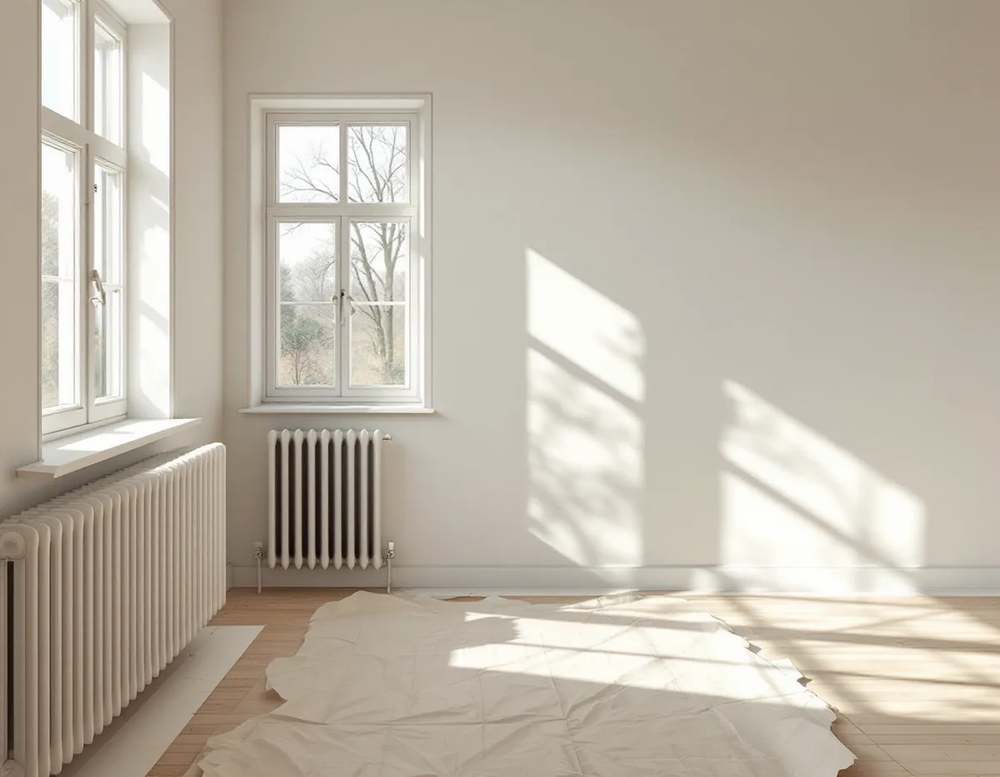
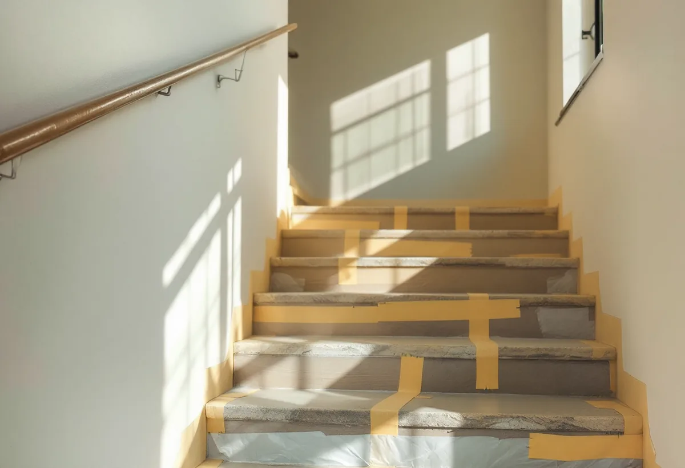
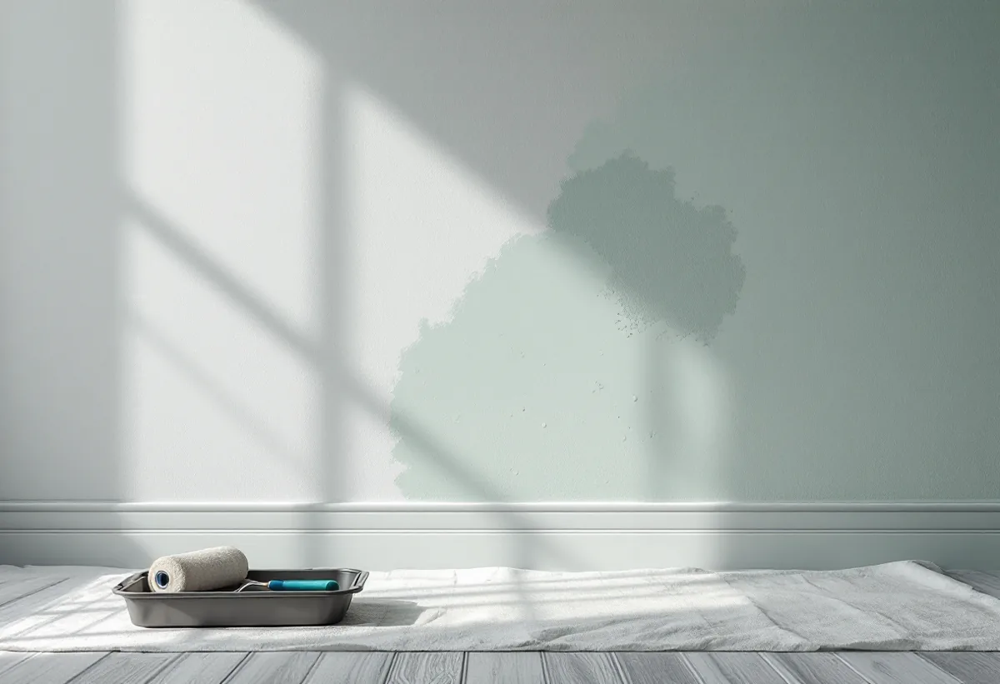

Besök
Gratis besök där vi tittar på ytorna och vem som beställer.
I Skärholmen bor man i hyresrätt, bostadsrätt och egna radhus, och det avgör vem som beställer målningen. Medlemmen i en bostadsrättsförening ansvarar för lägenhetens ytor, föreningen för trapphuset och radhusägaren för allt. Vi målar väggar, tak och snickerier – och kontrollerar gamla ytor innan vi slipar i hus från miljonprogrammets tid.

Stadens statistik för 2024 visar 16 620 bostäder i Skärholmens stadsdelsområde. 3 912 tillhör allmännyttan och 7 394 är övriga hyresrätter. 3 338 är bostadsrätter, och 1 976 ligger i småhus som ägs med äganderätt.
Det betyder att målning här beställs av tre olika slags kunder. Hyresvärden målar sina lägenheter, bostadsrättshavaren sin lägenhet och föreningen de gemensamma utrymmena. Radhusägaren bestämmer själv över hela huset.

Enligt bostadsrättslagen (7 kap. 12 §) ska bostadsrättshavaren på egen bekostnad hålla lägenheten i gott skick, om inte stadgarna säger något annat. Väggar, tak och snickerier inne i lägenheten är alltså normalt ditt ansvar – och din beställning.
Trapphus, tvättstuga och andra gemensamma utrymmen är föreningens. Där är det styrelsen som beställer, och arbetet planeras så att de boende kan ta sig in och ut medan färgen torkar.
Bredäng började byggas 1962 och Sätra strax efter, och stora delar av Skärholmen är byggda under 1960- och 1970-talen. Boverket skriver att asbest förbjöds inom byggsektorn 1982 och att det främst är byggnader från 1940–1970 som innehåller asbest, men att det kan finnas även i andra hus.
Så länge materialet sitter fast och inte bearbetas är det ingen fara. Det är när det slipas, borras eller rivs som fibrer kan frigöras. Innan vi slipar ner gamla spacklade ytor eller tar bort gamla väggbeklädnader frågar vi därför efter husets historia och tar prov vid minsta tvekan.
I ett radhus från 1960- eller 1970-talet har väggarna ofta målats om i flera omgångar. Ytan kan se hel ut, men gamla lager kan släppa när ny färg läggs på. Vi tvättar, provmålar en bit och spacklar där det behövs innan hela väggen målas.
Trappor, dörrar och fönsterbänkar slits mer än väggarna och behöver en färg som tål det. Vi väljer färg efter ytan: en för väggar, en annan för snickerier och en för våtare utrymmen som tvättstuga och hall.
Ett trapphus målas i etapper så att det går att ta sig förbi under hela arbetet. Vi sätter upp information i förväg, skyddar golv och räcken och målar dörrar och väggar i en ordning som gör att varje del hinner torka.
Styrelsen får ett skriftligt kostnadsförslag efter ett gratis besök, med de ytor som ska målas, kulörerna och en tidsplan som kan sättas upp i trapphuset.
Ljuset i en lägenhet i ett hus från 1960-talet beror mycket på väderstrecket och på hur stora fönstren är. En kulör som ser ljus ut i butiken kan bli grå i ett rum mot norr. Därför målar vi gärna en provyta på väggen innan hela rummet målas.
Snickerier som dörrar och foder kan få en egen nyans som skiljer sig lite från väggarna. Det gör att rummet får djup utan att bli mörkare. Vi hjälper dig att välja kulörer som passar ljuset och rummets storlek, och skriver in dem i kostnadsförslaget så att inget blir fel.

Gratis besök där vi tittar på ytorna och vem som beställer.
Vi frågar efter husets historia och tar prov vid tvekan.
Skriftligt kostnadsförslag med ytor, kulörer och tidsplan.
Tvätt, spackling och provmålning.
Väggar, tak och snickerier med rätt färg för varje yta.
Städning och genomgång.
Bor du i bostadsrätt ger arbete inne i lägenheten rotavdrag enligt Skatteverket, för det som du själv ansvarar för enligt stadgarna – väggar, golv, tak och fast inredning innanför lägenhetens gränser. Avdraget är 30 procent av arbetskostnaden, högst 50 000 kronor per person och år och högst 75 000 kronor tillsammans med rutavdrag. Material och resor ger inget avdrag. Geal drar avdraget direkt på fakturan.
Äger du ett småhus ger arbetet rotavdrag när du bor i huset eller har det som fritidshus. Avdraget är 30 procent av arbetskostnaden, högst 50 000 kronor per person och år och högst 75 000 kronor tillsammans med rutavdrag, enligt Skatteverket. Föreningens trapphus ger inget rotavdrag.
Ytornas storlek och skick, hur mycket som behöver spacklas, antalet dörrar och snickerier, om prov behöver tas och om arbetet görs i ett bebott trapphus. Du får ett skriftligt kostnadsförslag.
Fasad, fönster och invändig målning.
Målare i Stockholm →Takbyte, takbesiktning och plåtarbeten.
Takläggare i Skärholmen →Radhus i grupper i Bredäng, Sätra och Vårberg.
Takrenovering i Skärholmen →Radhustomterna och grannarna.
Attefallshus i Skärholmen →Radhusen, källarplanet och golvbrunnen.
Badrumsrenovering i Skärholmen →Radhusen från 60- och 70-tal.
Fasadmålning i Skärholmen →Miljonprogrammets radhus.
Fönsterrenovering i Skärholmen →1960-talskök, bostadsrätt och radhus.
Köksrenovering i Skärholmen →Altan, plank och förråd vid radhuset.
Snickare i Skärholmen →Egna radhus i Sätra, Bredäng och Vårberg.
Takbyte i Skärholmen →Ny tapet i hyresrätt och bostadsrätt.
Tapetsering i Skärholmen →Radhusen, uterum och skärmtak.
Tillbyggnad i Skärholmen →